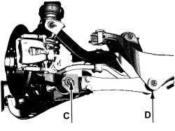

4450A40 REAR WHEEL GEOMETRY - CHECK USING OPTICAL EQUIPMENT, INCLUDES ADJUSTMENT IF NECESSARY
- Path
- Procedures > 44 SUSPENSION AND WHEELS > 4450 HUBS AND WHEELS > 4450A WHEEL GEOMETRY > 4450A40 REAR WHEEL GEOMETRY - CHECK USING OPTICAL EQUIPMENT, INCLUDES ADJUSTMENT IF NECESSARY
- Kind
- repair procedure (removal / refitting; the operation number is the code)
- Applies to
- all engines; all production periods
- Interactive page
- https://sloeber94.github.io/elrnDB-aBrrSpdr/en/#/946002221
Applies to: all engines; all production periods
- Check the rear wheel geometry after carrying out the following checks on the parts that affect the wheel geometry:
- vehicle with “Standard A” load - vehicle unladen including spare wheel, tools, accessories and consumables, full tank of fuel.
- Tyre inflation pressure.
Applies to: all engines; all production periods
GEOMETRY CHECK
- Check the rear wheel geometry, ensuring that ground clearance D - C is within the following values.
Measurement | Value | Validity |
|---|---|---|
Rear geometry D - C (mm) | 3 (Standard A) | 2.2 JTS |
Measurement | Value | Validity |
|---|---|---|
Rear geometry D - C with 225/50 R17 tyres (mm) | 5 (Standard A) | 3.2 JTS |
Measurement | Value | Validity |
|---|---|---|
Rear geometry D - C with 235/45 R18 tyres (mm) | 4 (Standard A) | 3.2 JTS |
Measurement | Value | Validity |
|---|---|---|
Rear geometry D - C (mm) | - | 2.4 JTD 20V |

Applies to: all engines; all production periods
HALF TOE-IN CHECK
- Check that the rear wheel half toe-in is within required limits.
Measurement | Value | Validity |
|---|---|---|
Rear wheel semi toe in with 16" wheels (mm) | 1.54 +/- 0.9 (Standard A) | 2.2 JTS 3.2 JTS 2.4 JTD 20V |
Measurement | Value | Validity |
|---|---|---|
Rear wheel semi toe in with 17" wheels (mm) | 1.63 +/- 0.9 (Standard A) | 2.2 JTS 3.2 JTS 2.4 JTD 20V |
Measurement | Value | Validity |
|---|---|---|
Rear wheel semi toe in with 18" wheels (mm) | 1.73 +/- 0.9 (Standard A) | 2.2 JTS 3.2 JTS 2.4 JTD 20V |
Measurement | Value | Validity |
|---|---|---|
Rear wheel semi toe in (degrees) | 0° 13’ +/- 7’ (Standard A) | 2.2 JTS 3.2 JTS 2.4 JTD 20V |
- If the rear wheel half toe-in is not within the recommended figures, adjust it following the instructions given below in "ADJUSTING THE CAMBER AND TOE-IN".
CAMBER CHECK
1. Check that the rear wheel camber is within required limits.
Measurement | Value | Validity |
|---|---|---|
Rear wheel camber (degrees) | - 0° 56’ +/- 18’ (Standard A) | 2.2 JTS 2.4 JTD 20V |
Measurement | Value | Validity |
|---|---|---|
Rear wheel camber (degrees) | - 0° 58’ +/- 18’ (Standard A) | 3.2 JTS |
- If the rear wheel camber is not within
Applies to: all engines; all production periods
ADJUSTING THE CAMBER AND TOE-IN
1. Undo the bolts securing the rear suspension longitudinal arms to the suspension struts and adjust the screws to alter the rear wheel toe-in to half the recommended value.
- Screw in the bolts securing the rear suspension longitudinal arms to the suspension struts without tightening them.

Applies to: all engines; all production periods
1. Adjust the screws for the bolts securing the track control arms (camber rod) in order to adjust the camber of the rear wheels to the recommended value.
- Tighten the wishbone bolts (camber rod) to the specified torque.
Component | Fastening | dia | Value (daNm) | Validity |
|---|---|---|---|---|
Wheel strut side camber rod | Bolt | M12 | 7.8 ÷ 9.3 + 30° |

Applies to: all engines; all production periods
1. Adjust the screws for the bolts securing the rear suspension longitudinal arms to the suspension struts in order to adjust the toe-in to the recommended value.
- Tighten the bolts securing the rear suspension longitudinal arms to the suspension struts to the specified torque.
Component | Fastening | dia | Value (daNm) | Validity |
|---|---|---|---|---|
Strut side longitudinal arm (toe in) | Bolt | M14 | 9.5 ÷ 10.5 + 45° |

Topics that link to this page (9)
- H002 DRIFT WHILST BRAKING
- H006 POOR DRIVING COMFORT - AT REAR
- H008 EXCESSIVE ROLLING/PITCHING - AT REAR
- S026 REAR NOISE (CREAKING/SQUEAKING/TICKING)
- S028 REAR NOISE (KNOCKING)
- X050 TYRE WEAR
- 2720D10 DRIVESHAFT WITH LEFT OR RIGHT JOINT (ONE) - R.R.
- 4420B10 L/H OR R/H REAR SUSPENSION WISHBONE (ONE) - R+R
- 4420D42 REAR SUSPENSION CROSSMEMBER - R.R. - CHECK WHEEL GEOMETRY SEPARATELY